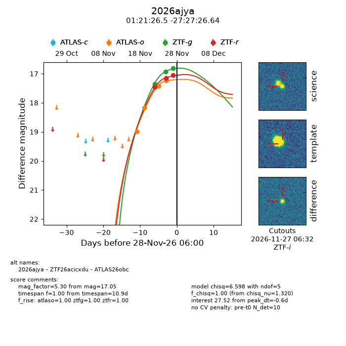
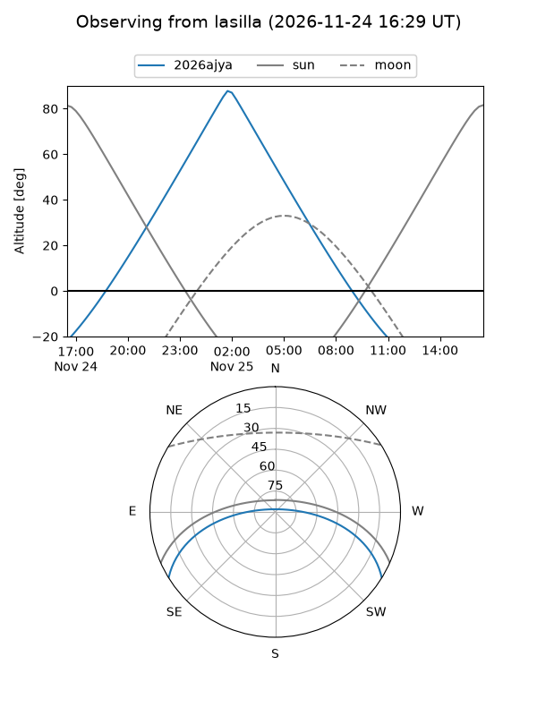
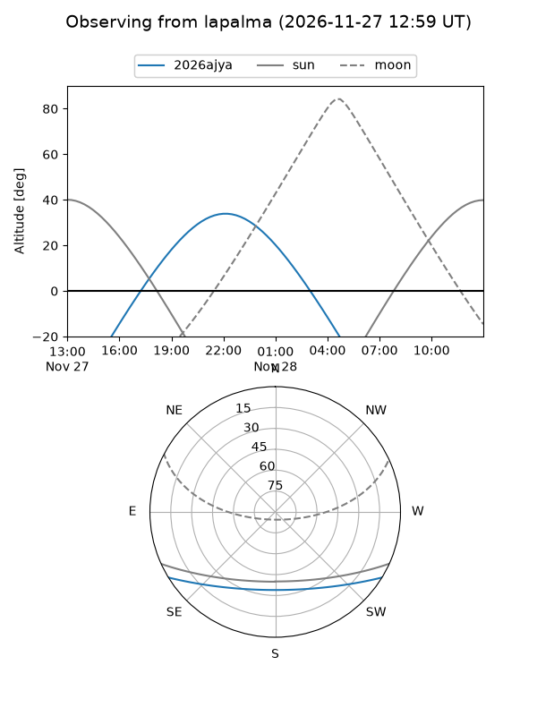
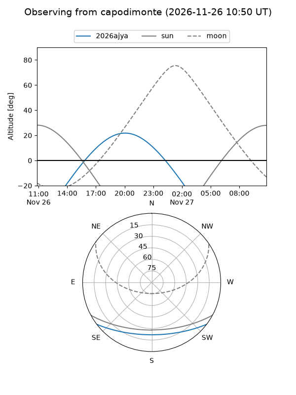
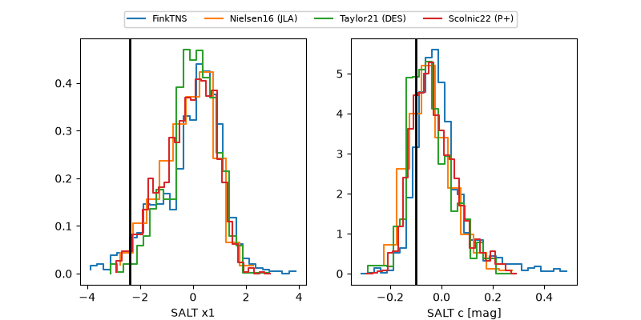

2026ajya
Target 2026ajya at 2026-11-28 06:02
Aliases and brokers:
FINK-ZTF: ztf.fink-portal.org/ZTF26acicxdu
Lasair-ZTF: lasair-ztf.lsst.ac.uk/objects/ZTF26acicxdu
ALeRCE-ZTF: alerce.online/object/ZTF26acicxdu
YSE-PZ: ziggy.ucolick.org/yse/transient_detail/2026ajya
TNS name: wis-tns.org/object/2026ajya
Direct TNS query: direct search
alt names
ZTF26acicxdu (ztf,fink_ztf)
2026ajya (tns,yse)
ATLAS26obc (atlas)
Coordinates:
equatorial (ra, dec) = 20.3603,-27.45740
equatorial (HMS+DMS) = 01:21:26.46,-27:27:26.64
galactic (l, b) = (217.4764,-83.32713)
Flags:
peak dt: -0.6
Photometry:
last atlaso=17.24, ztfg=16.81, ztfr=17.05
4 atlaso, 3 ztfg, 3 ztfr detections
Lightcurve

Visibility



Additional plots
